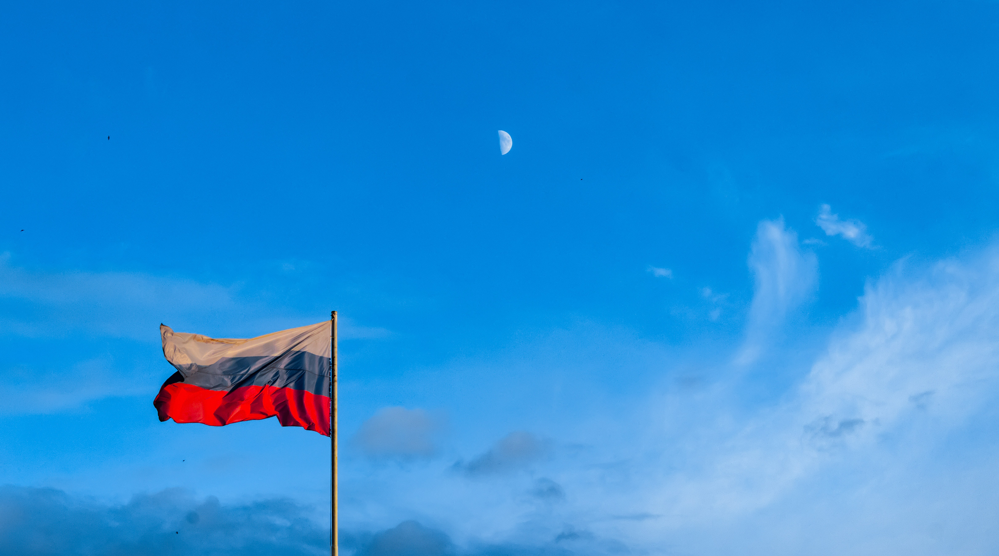

러시아는 세계에서 가장 큰 영토를 가지고 있으며, 찬란한 문화유산과 무궁무진한 경제적 잠재력을 보유한 나라이다. 또한 유럽 최대의 언어권 국가로서 유럽과 아시아를 잇는 가교이자 한반도를 둘러싼 동북아 정세 및 남북 통일 문제에 커다란 영향력을 발휘할 수 있는 주요 국가이다.
러시아어문학과에서는 러시아어 뿐 아니라 러시아 사회, 문화 전반에 대한 체계적인 교육을 통해 향후 한-러 관계 발전에 중추적인 역할을 할 수 있는 전문 인력을 양성하고 있다. 현재 학과를 졸업한 동문들은 전공지식을 기반으로 무역, 금융, 문화예술, 언론, 통역, 교육, 연구 등 다양한 분야의 전문가로 왕성하게 활동하고 있다.
